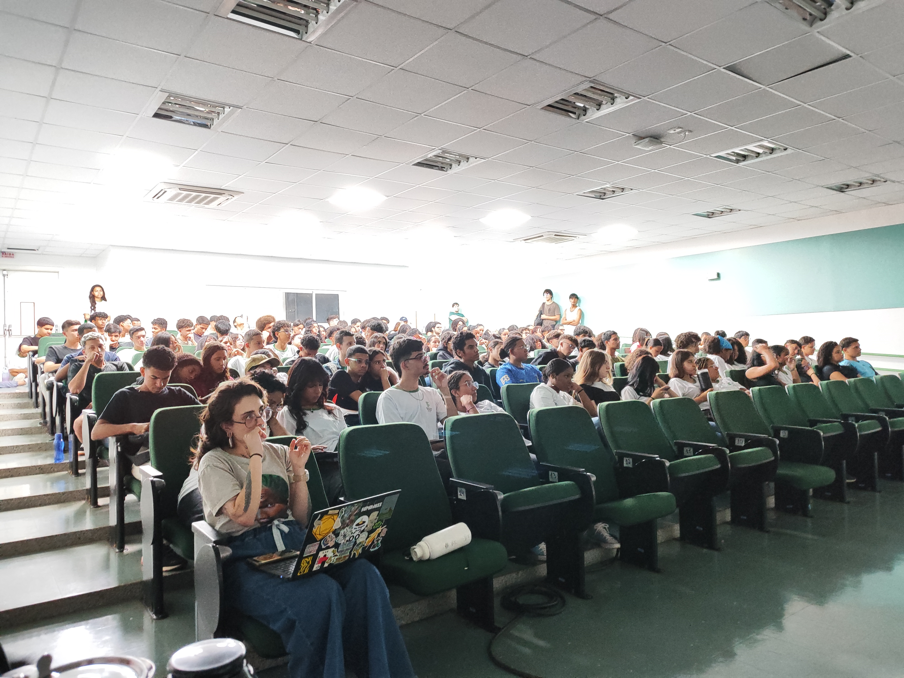
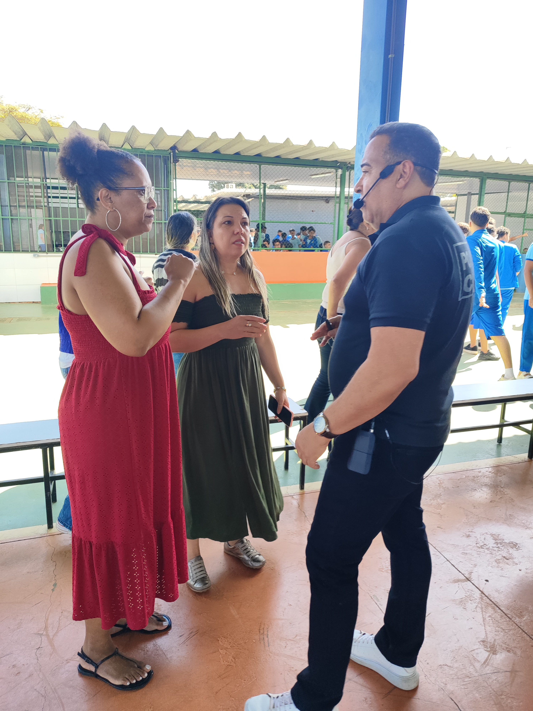
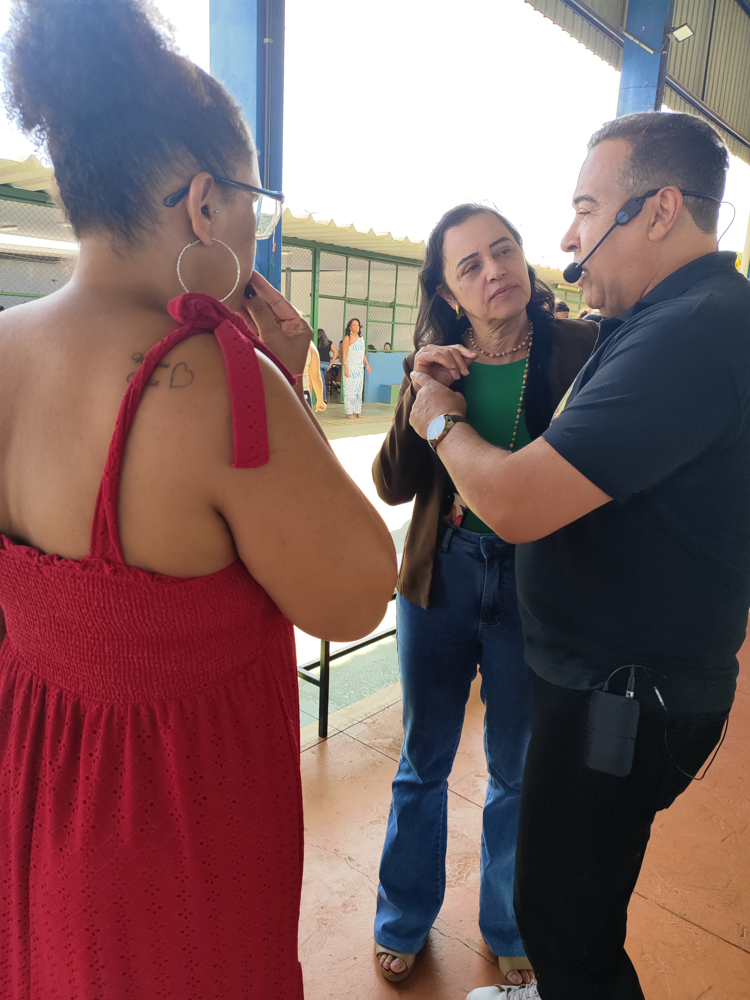

Galeria de Ações
O Projeto Amaria atua diretamente nas comunidades, escolas e centros esportivos, levando a conscientização onde ela é mais necessária.
AÇÃO 01
Impacto em Escolas Públicas
Palestras educacionais voltadas para adolescentes e jovens, abordando respeito, igualdade de gênero e identificação de relacionamentos abusivos desde cedo.



AÇÃO 02
Amaria no Esporte
Desconstruindo estereótipos prejudiciais no ambiente esportivo. Atletas, técnicos e gestores engajados como aliados na construção de um cenário mais equitativo.


AÇÃO 03
Engajamento Comunitário
Rodas de conversa e palestras para a comunidade em geral. Informando sobre a Lei Maria da Penha e fortalecendo a rede de apoio local.

